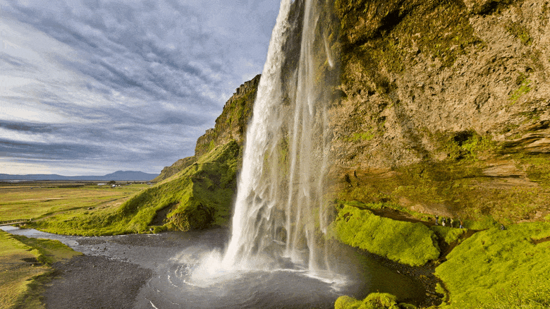

One of the most important world problem is Water!
Water scarcity affects every continent and around 2.8 billion people around the world at least one month out of every year. More than 1.2 billion people lack access to clean drinking water. Water scarcity involves water stress, water shortage or deficits, and water crisis. It’s a vital issue that needs immediate attention.
How to preserve water:
- Turn off the faucet while brushing or shaving: This can save roughly 200 gallons of water a month.
- Take shorter showers: Showers use approximately 2 gallons of water per minute. A short shower uses significantly less water than a bath.
- Flush the toilet only when necessary: Avoid using the toilet as a waste basket. A single flush requires 1–8 gallons of water.
- Displace some of the water in your toilet tank: You can do this by filling a water bottle or airtight bag with pebbles and putting it in your toilet’s tank.
- Store water properly: If you’re storing water at home, label the container as “drinking water” and replace the water every six months.